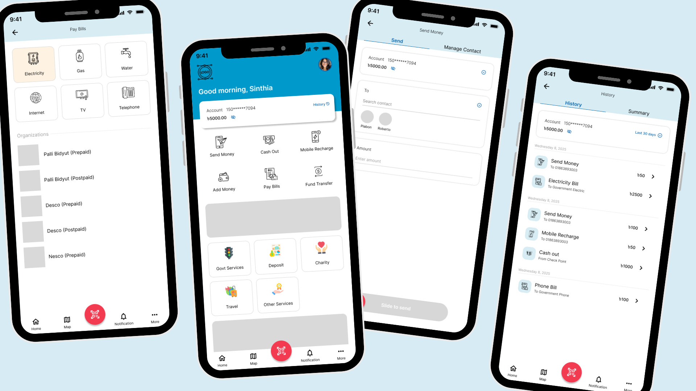
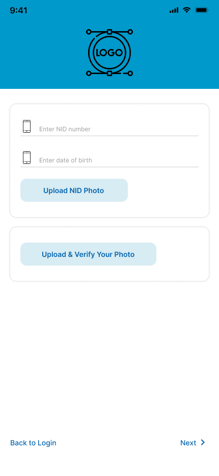
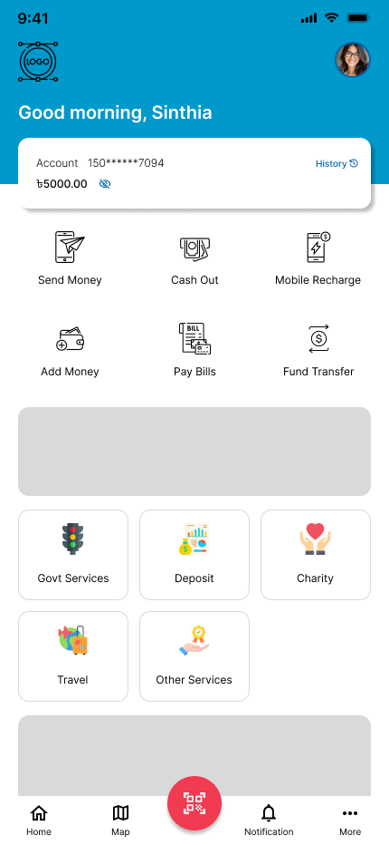
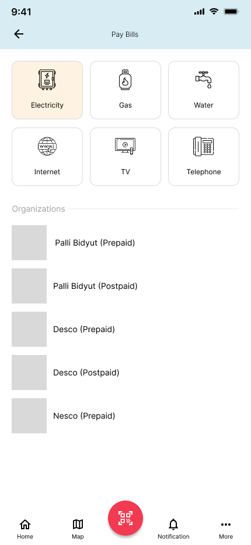
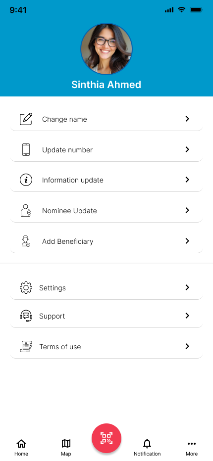

Mobile Wallet — designing trust into every tap
A complete mobile banking and wallet application for iOS, covering onboarding through daily financial tasks — from sending money and paying bills to cashing out and managing a personal profile.

The problem
ContextMobile financial services in Bangladesh and similar markets face a sharp contradiction: the people who need them most — those without easy access to bank branches — are also the least forgiving of confusing interfaces. A single moment of doubt on a payment screen can cause a user to abandon the app entirely and revert to cash.
Existing wallet apps in the region suffered from cluttered home screens that buried the most common actions, onboarding flows that asked for sensitive identity information without building any prior trust, and transaction flows with no clear visual hierarchy to confirm a user was doing the right thing with their money. The brief was to design a wallet app that felt as reliable as a bank teller — clear, calm, and in control.
"How might we make every financial action feel so obvious and safe that a first-time smartphone user completes it without hesitation?"
Planning & discovery
What I learnedBefore any screens were drawn, the existing landscape of mobile money apps in South Asia was audited — bKash, Nagad, and regional competitors — paying attention to where users expressed confusion or distrust in public reviews, and which interaction patterns appeared consistently across successful apps. The audit surfaced three recurring failure modes: onboarding that front-loaded verification before the user understood what they were signing up for; home screens that showed every feature at equal weight; and transaction flows that ended ambiguously, with no clear confirmation state.
Key findings
Three structural problems drove the design decisions. First, onboarding demanded NID numbers and selfies before users had seen a single piece of value — a pattern that erodes trust before it can be built. Second, home screens treated sending ৳50 to a friend with the same visual prominence as navigating to Govt Services or Charity — a cognitive tax on every daily interaction. Third, money transfer flows lacked a strong confirmation gesture, leaving users unsure whether a tap had actually sent funds or just staged them.
Design process
How I got thereThe design was structured around three phases — onboarding and trust, the home dashboard, and transactional flows — each moving through the same six-stage process before being considered complete.
| Empathize | Audited regional mobile money apps and mapped the moments where new users lose confidence during first-time setup and first transactions. |
| Define | Established the trust hierarchy: value-first onboarding, then phone verification, then NID — so users see what they're signing up for before they commit sensitive data. |
| Ideate | Explored dashboard layouts ranging from card-only to icon grid, and tested slide-to-send as a transaction confirmation gesture in place of a standard button. |
| Wireframe | Built low-fidelity flows for each of the six transaction types, separating "what the user needs to input" from "what the system needs to confirm." |
| Prototype | Produced 15 high-fidelity screens in Figma with a two-color system — sky blue for navigation and brand, red-pink for primary actions — to visually separate browsing from committing. |
| Review | Validated each flow end-to-end: onboarding → dashboard → transaction → history, ensuring the account balance and transaction details remained consistent across all screens. |
Onboarding — trust before verification
Most wallet apps open with a form. This design opens with a benefit statement: a branded header, a simple phone number field, and a clear list of what the account offers — all before asking for anything personal. NID verification and selfie upload are deferred to a second onboarding step, and PIN creation comes last, once the user has already committed to creating an account. The sequence reverses the industry default: earn trust, then ask for credentials.

Returning users — PIN or Face ID login

Identity verification — deferred to step two
Home dashboard — hierarchy over parity
The home screen gives the account balance card the top position and the most visual weight, as this is the piece of information users open the app to check most frequently. The six primary actions — Send Money, Cash Out, Mobile Recharge, Add Money, Pay Bills, Fund Transfer — sit directly beneath it as a 3×2 icon grid, giving equal access to the most common tasks without promoting one over another. Secondary services (Govt Services, Deposit, Charity, Travel, Other) sit further down the page, visible when needed but out of the critical path. The floating QR button in the center of the navigation bar provides a one-tap shortcut to the most spontaneous action: scanning a code to pay or receive.

Dashboard — balance card, primary actions, secondary services

Deposit bottom sheet — secondary services revealed on demand
Transaction flows — input, review, confirm
Every transaction flow follows the same three-stage pattern: input (who and how much), review (carrier or bank detected, ongoing offers shown), and confirm (a slide-to-send gesture that requires a deliberate physical action rather than an accidental tap). The slide gesture was chosen specifically because it is nearly impossible to trigger unintentionally, which directly addresses the most common source of user anxiety: sending money to the wrong person or the wrong amount.
Each transaction screen also surfaces the account balance prominently — so users always know how much they have before they commit to an amount — and shows recent contacts as avatar shortcuts to reduce the friction of typing a number each time.

Send Money — contact picker and amount input

Mobile Recharge — carrier auto-detected, offers shown

Fund Transfer — bank account or card, same slide pattern

Add Money — pull from a linked bank account

Cash Out — scan a QR code or use an ATM
Pay Bills — categorical then organizational
Bill payment organizes providers into two tiers: a top icon row for utility categories (Electricity, Gas, Water, Internet, TV, Telephone), and a scrollable list of specific organizations within the selected category. Tapping Electricity, for instance, reveals Palli Bidyut, Desco, Nesco, and others as named list items with logo thumbnails. This two-level structure scales cleanly to dozens of providers without cluttering the initial view.

Pay Bills — categories above, providers below
Profile & history — personal and transactional, separated
The profile screen cleanly divides what belongs to the person from what belongs to the account. The top half covers identity and relationship data — name, phone number, personal information, nominees, and beneficiaries. The bottom half covers operational settings — app settings, support, and terms of use. This separation means a user looking to add a beneficiary and a user looking to contact support never cross paths in the same section. The transaction history separates by date and labels each entry with the action type, destination, and amount at a glance, with a Summary tab available for anyone who needs a period rollup.

Profile — personal data and account settings, clearly separated

History — date-grouped, action-typed, amount-visible at a glance
Key design decisions
RationaleA two-color action system
Sky blue (#0099CC) was chosen as the brand and navigation color — present in the header, the logo area, the profile banner, and the balance card. Red-pink (#E8344A) was reserved exclusively for primary call-to-action buttons: Scan QR, Login, and the floating QR shortcut. This strict separation means users learn quickly that blue means "where you are" and red means "act now." It also prevents the common mistake of using the same color for both decorative and actionable elements, which reduces confidence in a financial context.
Slide to send, not tap to send
Replacing a standard confirm button with a slide gesture on every transaction screen introduces deliberate friction at the highest-stakes moment. The physical effort required to slide an arrow across a track is small in absolute terms, but it is enough to interrupt an accidental tap and give the user one more moment to verify the payee and amount. This is a standard pattern in high-stakes mobile interactions (rideshare, emergency calls) and it belongs in payments too.
Balance visibility throughout
The account balance appears at the top of every transaction screen, not just the home dashboard. This prevents the common mistake of entering an amount greater than the available balance without realizing it until an error appears — a frustration that erodes trust and increases support contacts.
Outcome & impact
ResultsThe completed design delivers a coherent, end-to-end experience across 15 screens — from a first-time user reading about account benefits, all the way through to reviewing a month of transaction history. The two-color action system and the slide-to-send pattern are consistent across every transaction type, meaning that anyone who learns Send Money already understands Mobile Recharge and Fund Transfer. And the deferred onboarding model — value first, verification second — treats new users as potential customers rather than compliance risks from the first screen.
What the design delivers
A complete, production-ready UI system for a mobile wallet application.
Reflections
The next iteration of this design would introduce a transaction receipt screen after each successful send, giving users a shareable confirmation they can screenshot for records — a feature that came up repeatedly in user research on competing apps. The Map tab in the bottom navigation is a strong foundation for a nearby agent/ATM locator, which would complete the Cash Out flow for users who prefer human-assisted withdrawals over QR scanning. And the notification center, currently represented in the bottom bar, would benefit from a full design pass to separate promotional notifications from transactional alerts — a critical distinction in a financial app.